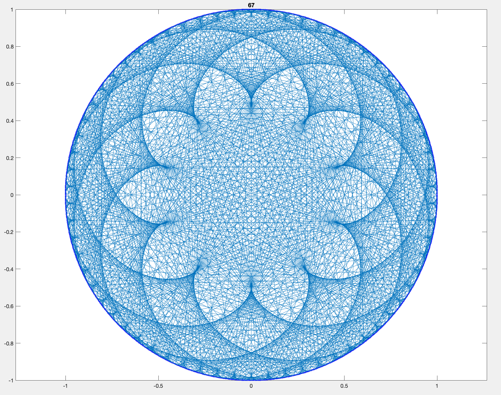
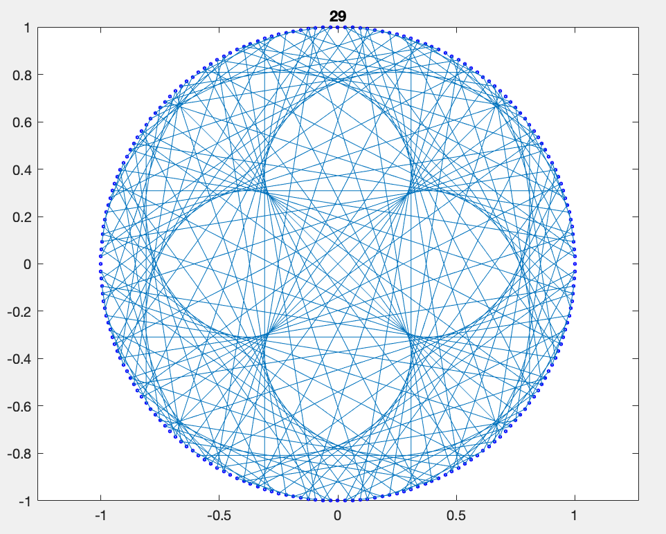

Times Tables
A script that produces times tables which display beautiful patterns and symmetry.
Download Code [.m]
Here are some multiplication times tables I generated. The algorithm divides a unit circle into n points, then draws a line between the k’th point and the (k*t)’th point, where t is an integer (shown at the top of each graph). It repeats this for each point, and uses the modulo operator if k*t exceeds n (aka periodic boundary condition). Here’s a hodgepodge of my favorite graphs, with varying n and t.
